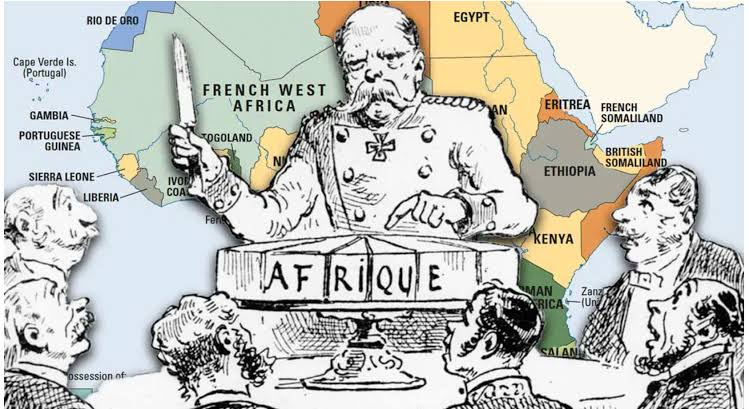
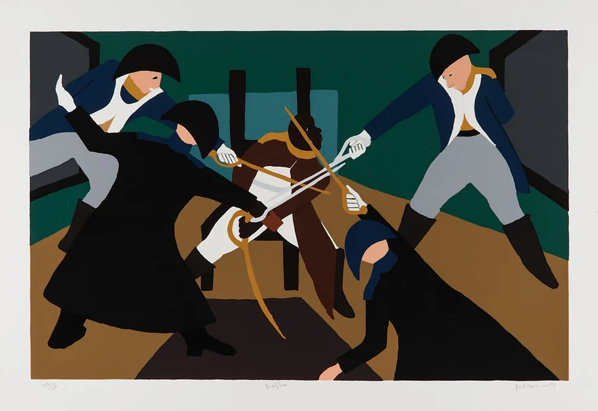
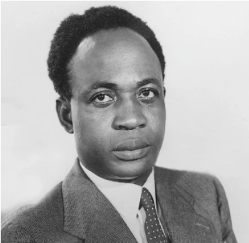
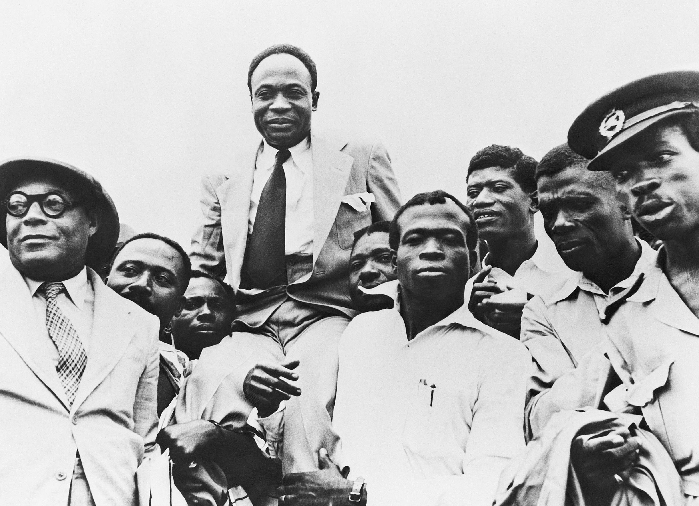
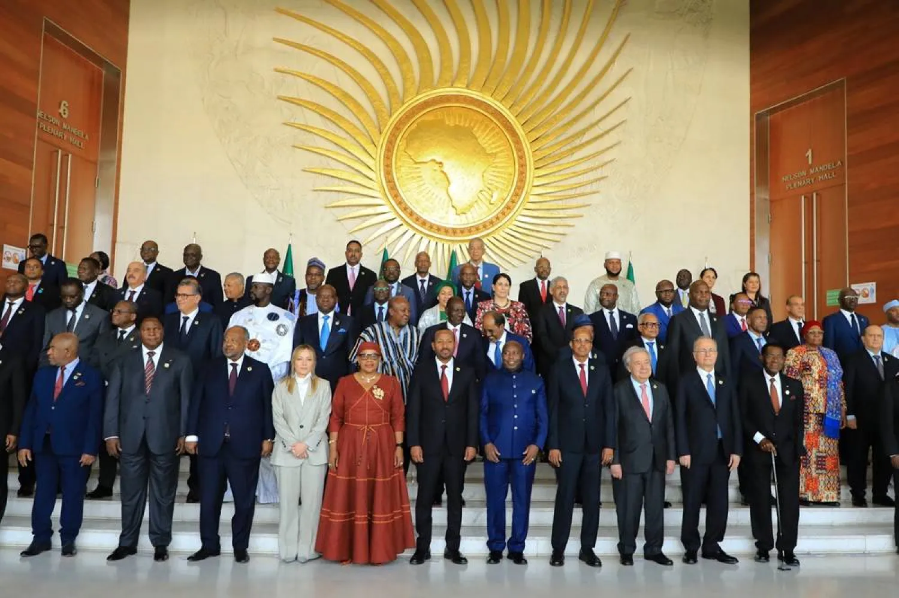

World History — Semester 2 — Lesson 07 — Standard 10.10
Decolonization & Nation-Building
Essential Question
What challenges did newly independent nations face, and did independence deliver what people hoped for?
DECOLONIZATION TIMELINE — 1947 TO 1962
1947
India and Pakistan win independence; partition violence kills up to 2 million people.
1948
Israel is founded; 700,000 Palestinians flee or are expelled in the Nakba.
1957
Ghana becomes the first sub-Saharan African colony to gain independence under Nkrumah.
1960
"Year of Africa" — 17 nations gain independence; Lumumba assassinated in the Congo.
1962
Algeria wins independence after eight brutal years of war against France.
On March 6, 1957, a man named Kwame NkrumahThe leader of Ghana's independence movement and its first prime minister. stood before a crowd in Accra and told them their country had a new name. It was no longer the Gold Coast — the name Britain had given it when they took it. Now it was Ghana. People wept. Mothers lifted children into the air. And somewhere across the ocean, a colonial empire signed the papers and let go. What happened in that crowd in 1957 was happening everywhere at once — in India, in Algeria, in the Congo, across dozens of countries that had been ruled by foreign powers for generations. Between 1945 and 1980, over 80 new nations were born.
On March 6, 1957, Kwame Nkrumah stood in front of a huge crowd in Ghana and told them they were finally free from British rule. People cried, cheered, and held their children up high. The same thing was happening all over the world at the same time — in India, in Algeria, in the Congo. Between 1945 and 1980, over 80 new countries were created as European empires fell apart.
This is the story of decolonizationThe process by which colonies break free from the countries that ruled them and become independent nations. — one of the largest political transformations in human history. The celebrations were real. But so were the problems that followed.
This is the story of decolonization — one of the biggest changes in history. The celebrations were real. But so were the problems that came after.
CHAPTER ONE
THE COLONIAL WORLD
Colonial Africa, circa 1913. Nearly the entire continent was controlled by European powers. The borders were drawn in European capitals with no input from the people who already lived there. Wikimedia Commons.
By 1900, European powers controlled roughly 85 percent of the world's land surface. Britain, France, Belgium, the Netherlands, Portugal, and others had built empires across Africa, Asia, the Caribbean, and the Pacific over the previous three centuries. Colonial rule meant that the laws, the economy, the schools, and the military of a place were controlled by a foreign government on the other side of the ocean. Europeans preached self-determinationThe idea that people have the right to choose their own government and control their own country. and liberty at home — but refused to apply those ideas abroad.
By 1900, European countries controlled about 85 percent of all land on Earth. Britain, France, Belgium, and others had taken over large parts of Africa, Asia, and other regions. Colonial rule meant a foreign government far away controlled your laws, schools, money, and military. Europeans believed in freedom for themselves — but not for the people they ruled.
In 1884, European leaders met in Berlin to divide Africa among themselves. No African leader was invited. The borders they drew were straight lines on a map — geometric, clean, and completely disconnected from the human reality of the continent. These lines split ethnic communities that had existed for centuries and forced longtime enemies into the same territory. When independence came decades later, those borders did not change. The new nations inherited colonial maps — and every conflict those maps had created.
In 1884, European leaders met in Berlin to split Africa between them. No African was invited. They drew straight-line borders on a map with no concern for the people already living there. These lines broke apart communities and trapped enemies inside the same borders. When independence arrived, the new countries kept those same borders — and all the problems that came with them.
Colonial economies made the situation worse. They were designed to extract raw materials — cotton, rubber, gold, cocoa, copper — and ship them to European factories. Local industries were kept deliberately small. Schools trained clerks and low-level administrators, not engineers or political leaders. When independence came, the new nations found themselves still selling raw materials to the same countries that had just colonized them. Being politically free did not automatically mean being economically free — a trap later called neo-colonialismWhen a country is officially independent but its economy is still controlled by wealthier foreign nations..
Colonial economies were built to help Europe, not the people in the colonies. Crops and minerals were shipped to European factories. Schools trained local people for low-level jobs, not to run a country. When independence came, new nations were still economically tied to the same countries that had ruled them. Being politically free did not mean being economically free. This trap was later called neo-colonialism.
Real-world connection: The borders drawn by colonial powers in the 1800s still define the countries of Africa and the Middle East today — including many of the conflict zones students see in the news.
Real-world connection: The straight-line borders drawn by Europeans in the 1800s still shape Africa and the Middle East today — including many of the conflicts in the news.
DID YOU KNOW

The 1884 Berlin Conference — Africa divided in three months, without a single African in the room.
The Berlin Conference lasted only three months, but the borders drawn in that room lasted over a century. Of the 54 countries in Africa today, the vast majority still use the boundaries created at that meeting. Not one African leader was present when it happened.
CHAPTER TWO
THE WAVE BREAKS
World War II cracked the empires open. The war left Britain, France, and the Netherlands economically ruined — they could no longer afford to control the world. Hundreds of thousands of colonial soldiers had fought and died for their colonizers in Europe and returned home demanding to know why freedom was for Europeans only. Nationalist movementsOrganized groups of people who fought to make their country independent from foreign control. that had been building for decades now had momentum, money, and a world audience. Between 1945 and 1980, over 80 countries gained independence.
World War II broke the empires apart. The war left European countries broke — they could not afford to keep ruling their colonies. Colonial soldiers who had fought for Europe came home asking why freedom only applied to Europeans. Nationalist movements — groups organizing for independence — had been growing for years and now saw their chance. Between 1945 and 1980, over 80 countries became free.
Kwame Nkrumah addresses the crowd at Ghana's independence ceremony, March 6, 1957. His declaration sent a message to independence movements across the entire African continent. Wikimedia Commons.
In 1957, Ghana became the first sub-Saharan African colony to gain independence, and its leader Nkrumah became a symbol for the entire continent. He called for "Africa for Africans" and hosted independence leaders from across the continent at his capital. Within three years, 17 more African nations followed in a single year — 1960 became known as "The Year of Africa." In the Congo that same year, Belgium finally granted independence after 70 years of brutal rule — but it handed over a country with almost no trained doctors, lawyers, or engineers, by deliberate design.
In 1957, Ghana became the first country in sub-Saharan Africa to win independence. Nkrumah became a symbol for independence movements across Africa, saying Africa belonged to Africans. Within three years, 17 more African nations became independent in a single year — 1960 is called "The Year of Africa." That same year, Belgium gave the Congo its independence after 70 years of brutal rule — but had deliberately prevented Congolese people from getting advanced education, so the new country had almost no trained leaders.
In Algeria, France refused to consider independence at all. French leaders insisted Algeria was not a colony — it was legally part of France itself, home to over a million French settlers. When Algerians launched an armed uprising in 1954, France responded with overwhelming military force, including the systematic use of torture against suspected rebels. The war lasted eight brutal years. Estimates suggest between 300,000 and 1.5 million Algerians died. France finally withdrew in 1962, but the war had already shown the world exactly how far a colonial power would go to hold what it had taken.
In Algeria, France refused to let go. French leaders said Algeria was actually part of France, not a colony. When Algerians started fighting for independence in 1954, France used torture, napalm, and prison camps. The war lasted eight years and killed hundreds of thousands of Algerians. France finally left in 1962. The Algerian War showed how brutal a colonial power could be when it refused to accept the end of empire.
In 1948, the conflict in Palestine showed that decolonization could mean completely different things to different peoples at the same time. Jewish survivors of the Holocaust poured into Palestine after World War II seeking a homeland after six million Jews had been murdered in Europe. In May 1948, the State of Israel was declared. Arab states attacked and lost. In the fighting, approximately 700,000 Palestinians were expelled from or fled their homes — an event Palestinians call the NakbaArabic for "catastrophe" — the displacement of 700,000 Palestinians during the 1948 Arab-Israeli War.. For Jewish Holocaust survivors, Israel meant survival. For Palestinians, it meant catastrophe. The conflict between these two peoples, both shaped by European decisions, has never been resolved.
In Palestine, independence meant opposite things to different people. Jewish Holocaust survivors came to Palestine looking for safety after six million Jews were murdered in Europe. In 1948, Israel declared independence. Arab countries attacked and lost. During the war, about 700,000 Palestinians were forced from their homes — an event Palestinians call the Nakba, meaning "catastrophe." For Jewish survivors, Israel meant safety. For Palestinians, it meant disaster. That conflict, shaped by European colonialism and World War II, has continued ever since.
FAST FACTS
THE SCALE OF DECOLONIZATION, 1945–1980
80+new nations created in this era — more than in any other 35-year period in recorded history
2Mpeople killed in communal violence during the 1947 partition of India and Pakistan
17African nations that became independent in 1960 alone — "The Year of Africa"
700KPalestinians displaced in 1948, in an event they call the Nakba — Arabic for "catastrophe"
CHAPTER THREE
THE HUMAN COST
Refugees during the 1947 partition of India and Pakistan. Between 10 and 20 million people were displaced in weeks. Up to 2 million were killed. Wikimedia Commons.
When borders are redrawn, real people pay the price. India's independence from Britain in 1947 came paired with partitionDividing a territory into separate countries, often along religious or ethnic lines. — the division of the colony into Hindu-majority India and Muslim-majority Pakistan. Between 10 and 20 million people were forced to move in a matter of weeks. Families who had been neighbors for generations were suddenly on opposite sides of a new international border. Trains carrying refugees in both directions were attacked. Entire villages were massacred. Up to 2 million people died. Independence created two new countries and destroyed millions of old lives at the same time.
When new borders are drawn, real people suffer. India became free from Britain in 1947, but Britain also split the colony into two countries: India for Hindus and Pakistan for Muslims. Between 10 and 20 million people had to flee their homes in just a few weeks. Up to 2 million were killed as communities attacked each other. Trains carrying refugees were burned. Entire villages were wiped out. Independence created new countries and destroyed millions of lives at the same time.
The Cold WarThe tense political competition between the United States and Soviet Union from 1945 to 1991, which played out in countries around the world. added another layer of danger. Every newly independent nation had to navigate a world divided between two superpowers who wanted them on their side. Leaders who made choices the superpowers disliked were removed, imprisoned, or killed. In the Congo, Patrice LumumbaThe Congo's first elected prime minister, assassinated in 1961 with CIA and Belgian government involvement. — the country's first elected prime minister — was labeled a communist threat by the United States when he asked the Soviet Union for help during a crisis. The CIA organized his removal from power. Within months of independence, Lumumba was arrested and executed. Cold War interferenceWhen the United States or Soviet Union intervened in other countries' politics to control outcomes in their global competition. destroyed the Congo's democracy before it had a chance to function.
The Cold War made things worse. Every new country had to deal with the United States and the Soviet Union competing for control. Leaders who made choices the superpowers disliked were removed or killed. In the Congo, Prime Minister Patrice Lumumba asked the Soviet Union for help during a crisis. The United States labeled him a communist enemy and the CIA helped remove him from power. Within months of independence, Lumumba was captured and killed. The Congo's democracy was destroyed before it had a real chance.
Patrice Lumumba, the Congo's first elected prime minister, 1960. He was assassinated within months of independence, with documented CIA and Belgian government involvement. Wikimedia Commons.
The Algerian War revealed what "human cost" truly meant. France used napalm, collective punishment, concentration camps, and systematic torture against a civilian population. Algerian independence fighters used bombings, assassinations, and guerrilla tactics in return. The war lasted eight years and left scars — physical, psychological, and political — that both countries carried for generations. When France finally withdrew in 1962, over one million French settlers were forced to abandon the country that had been their home for generations. The violence of decolonization was not a side effect. In many places, it was the entire story.
The Algerian War showed exactly what human cost meant. France used napalm, prison camps, and torture against Algerian civilians. Algerian fighters used bombs and guerrilla attacks in return. The war lasted eight years and scarred both countries for generations. When France finally left in 1962, over a million French settlers had to leave the only home they had ever known. In many places, the violence of decolonization was not a side effect. It was the whole story.
ART SPOTLIGHT

Toussaint L'Ouverture Series, Panel 36 — Jacob Lawrence, 1938
Lawrence painted this 41-panel series at age 21 documenting Toussaint L'Ouverture, leader of the Haitian Revolution and the first successful anti-colonial uprising in the Americas. The series is held at the Amistad Research Center in New Orleans.
Lawrence deliberately limited himself to four colors — black, white, red, and yellow — because he could not afford more paint. That constraint became a signature: the same four colors repeated across 41 panels gave the series a visual unity that critics later called one of the most powerful examples of storytelling through limitation in 20th-century American art. Independence movements around the world adopted the Haitian Revolution as their founding myth — the first proof that colonized people could win.
CHAPTER FOUR
AFTER INDEPENDENCE
David Ben-Gurion declares the State of Israel, May 14, 1948, beneath a portrait of Theodor Herzl. The same day, Arab states attacked; 700,000 Palestinians fled or were expelled. Wikimedia Commons.
Military coups became one of the defining patterns of the post-independence world. Between 1960 and 1980, at least 30 elected governments across Africa were overthrown by their own militaries. The reasons repeated everywhere: colonial powers had built armies designed to control people, not protect elections. Civilian governments were new and fragile. Economies were struggling under the weight of colonial debt and export dependency. When a crisis hit — and it always did — the military stepped in. Sometimes a Cold War superpower was quietly involved. Sometimes not. The result was the same: the democratic future that independence movements had fought for was erased, often within years of independence. Even Ghana — the great symbol — lost Nkrumah to a coupWhen the military takes over a government by force, removing elected leaders. in 1966 while he was traveling abroad.
Military coups became a repeating pattern across the newly independent world. Between 1960 and 1980, at least 30 elected governments in Africa were overthrown by their own militaries. Colonial armies were built to control people, not protect elections. New governments were fragile. Economies were struggling. When a crisis hit, soldiers took over. Sometimes Cold War powers helped make it happen. Even Ghana — the symbol of African freedom — had Nkrumah removed by a coup in 1966 while he was traveling. The democratic future that people had fought for was taken away again and again.
The concept of the nation-stateA country where the borders and government are supposed to represent a unified people or national identity. — built in Europe over centuries through wars and migrations — was imposed overnight on societies that colonial borders had deliberately divided. Building national unity across dozens of ethnic groups, languages, and religions, inside borders drawn by strangers, was genuinely hard. It was not impossible — many nations succeeded over time — but it was a problem colonialism had created and new governments were left to solve alone, broke, under Cold War pressure, with militaries looking for any excuse to take power.
Building a nation-state is hard even under good conditions. Colonial borders had put dozens of different ethnic groups, languages, and religions inside the same country on purpose to make unity harder. New governments had to create national identity out of societies colonialism had deliberately divided — with no money, Cold War pressure from outside, and militaries waiting for a chance to take over. Colonialism created the problem. New governments were left to solve it alone.
Independence did deliver real things. Schools, hospitals, and universities were built. Languages and cultural traditions that colonialism had tried to suppress were revived and celebrated. The United Nations grew from 51 members in 1945 to over 140 by 1975, giving formerly colonized nations a voice in world affairs for the first time. The simple fact of self-determinationThe right of people to choose their own government and control their own country. — of governing oneself, of making one's own mistakes, of flying one's own flag — mattered enormously to people who had spent their entire lives under foreign control. Independence was not everything people had hoped. But it was not nothing.
Independence did bring real gains. New schools, hospitals, and universities were built. Languages and traditions that colonialism had suppressed came back to life. The United Nations grew as newly independent nations joined and finally had a voice in world decisions. And the simple fact of governing yourself — making your own choices, flying your own flag — mattered deeply to people who had never had that before. Independence was not everything people dreamed. But it was not nothing, either.
Real-world connection: Many conflicts that appear in today's news as "civil wars" or "ethnic tensions" are rooted in colonial borders, Cold War interference, and economic structures that independence could not undo overnight.
Real-world connection: Many conflicts in today's news — often called "civil wars" — are rooted in the colonial borders and Cold War interference that independence could not fix overnight.
PRIMARY SOURCE MOMENT

Kwame Nkrumah, circa 1957. Wikimedia Commons.
"We have awakened. We will not sleep anymore. Today, from now on, there is a new African in the world. That new African is ready to fight his own battles and show that after all, the black man is capable of managing his own affairs. We are going to demonstrate to the world, to the other nations, that we are prepared to lay our own foundation."
— Kwame Nkrumah, Independence Address, Accra, Ghana, March 6, 1957
WHY THIS MATTERS: Nkrumah is not just celebrating freedom from Britain. He is directly challenging the racist argument that had justified colonialism for centuries — the claim that non-European peoples needed European guidance to govern themselves. He is making a promise: not just independence, but proof. Given what happened next — the Congo, Algeria, the coups, the Cold War interference — think about what this speech promised, and whether independence delivered it.
THEN AND NOW
THE BORDERS AND PROBLEMS LEFT BY COLONIALISM ARE STILL HERE — BUT SO IS THE DETERMINATION THAT DROVE INDEPENDENCE IN THE FIRST PLACE.
1957

Crowds in Accra celebrate Ghana's independence, March 6, 1957. Wikimedia Commons.
NOW

African heads of state at a recent African Union summit — independent nations shaping their collective future. Wikimedia Commons / CC.
THEN
In 1957, Nkrumah stood before a crowd in Accra and promised that Africa would govern itself. The celebration was real — but so was the weight of everything colonial rule had left behind: broken borders, extracted economies, armies built to suppress rather than protect, and Cold War powers already watching.
NOW
Today, 55 African nations send representatives to the African Union, a continental organization that coordinates political, economic, and security decisions entirely on African terms. Its existence would have been unimaginable to the European leaders who divided Africa in Berlin in 1884.
CONNECTION
The problems decolonization created — colonial borders, weak economies, coups, outside interference — did not disappear with independence flags and ceremonies. Many are visible in today's headlines. But what also continued was exactly what filled that crowd in Accra in 1957: the belief that people have the right to govern themselves, and the refusal to stop fighting for it.
When you think about what India, the Congo, Algeria, and dozens of other nations faced after independence — Cold War manipulation, inherited borders, military coups — what would you say was the most important thing the decolonization era proved about what freedom actually requires?